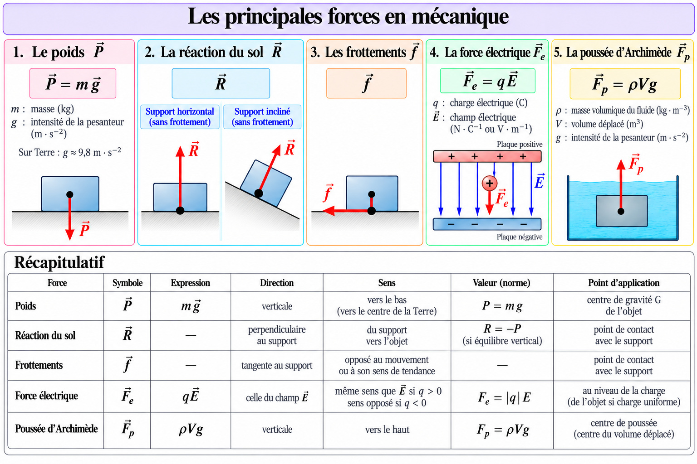
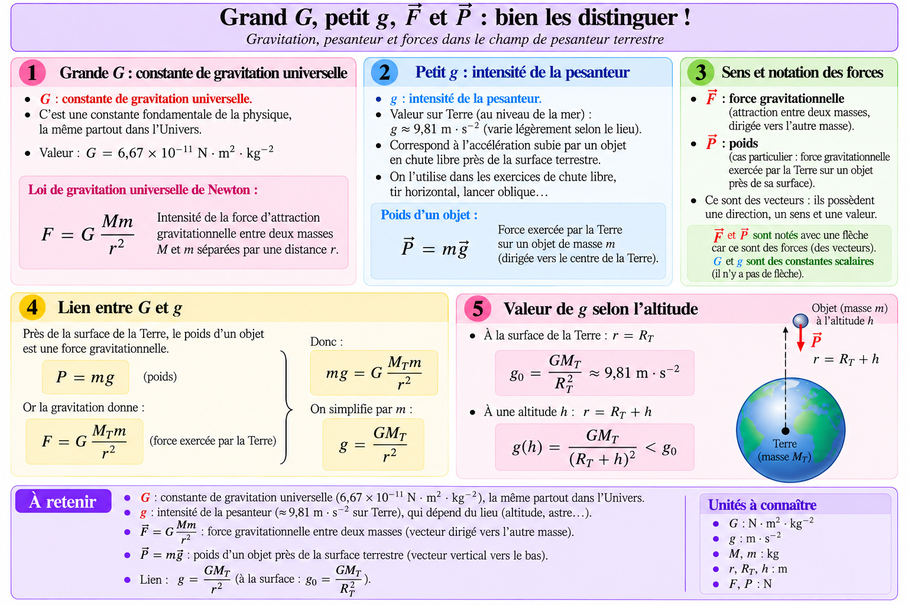
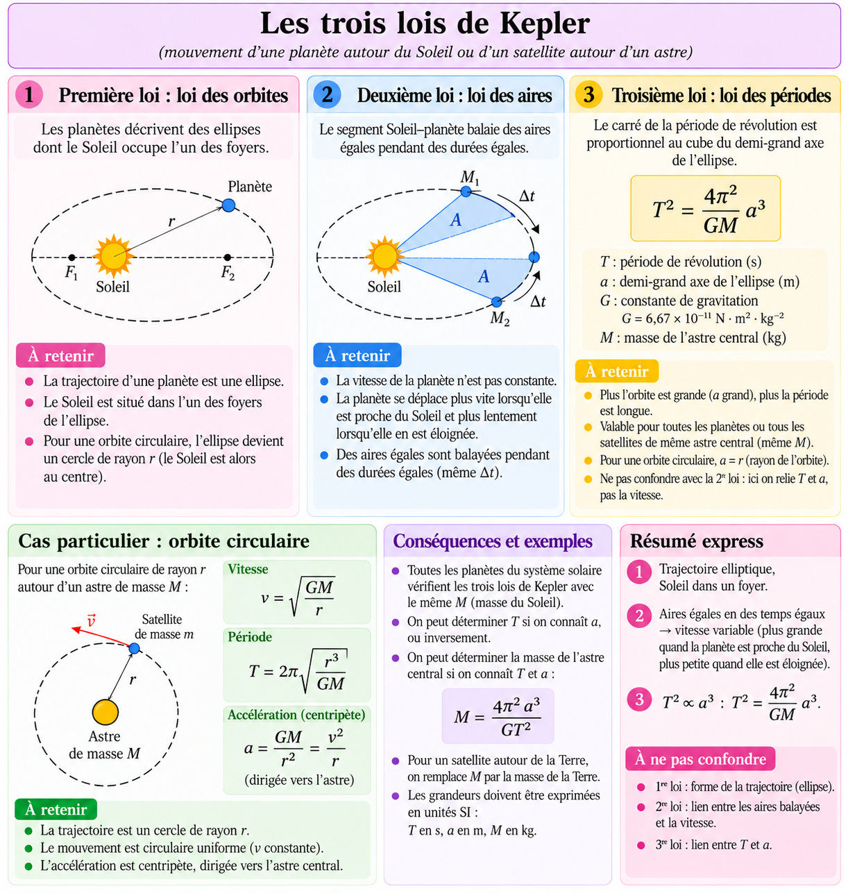
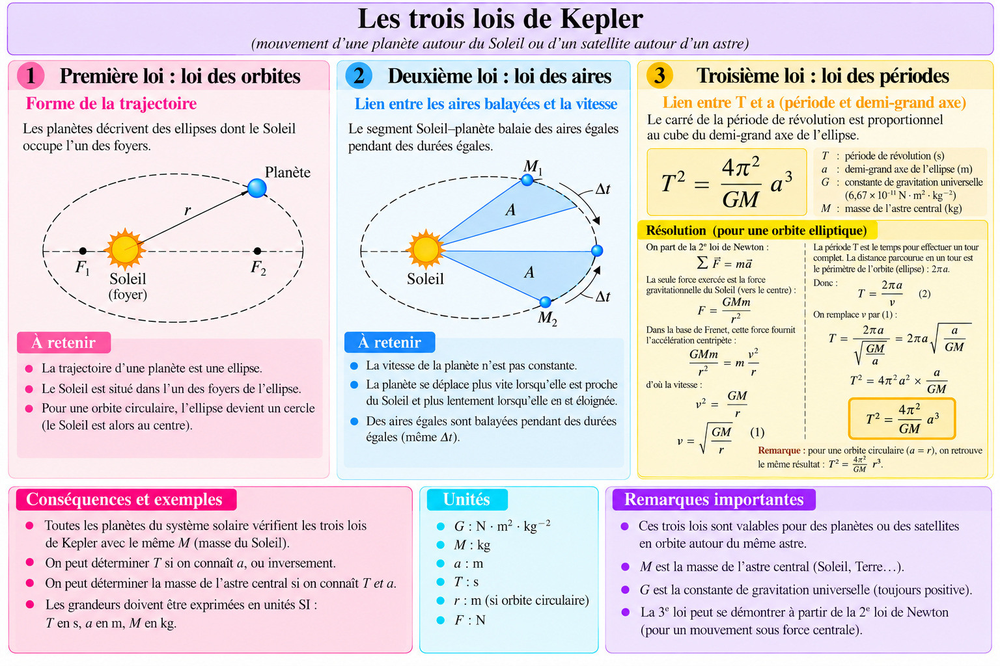
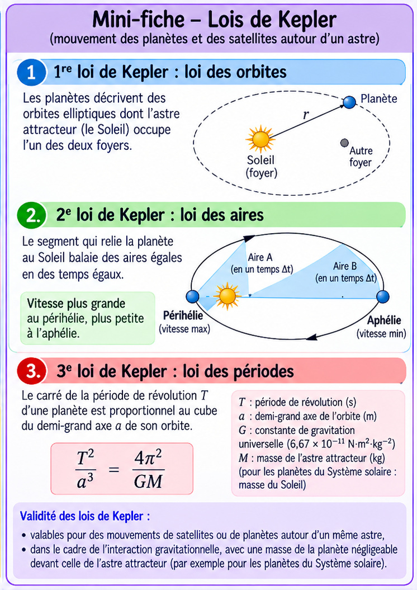
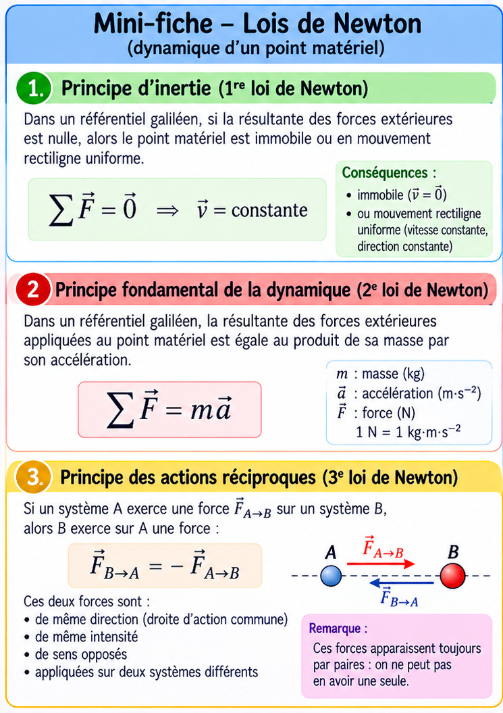
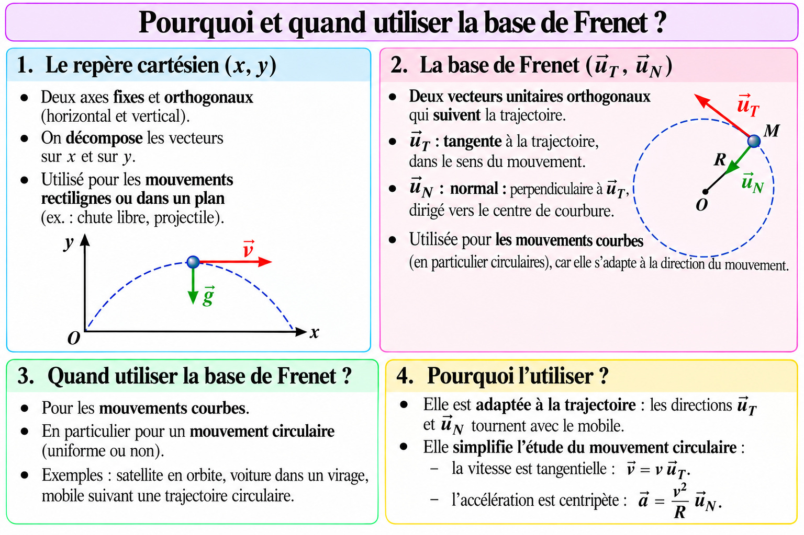
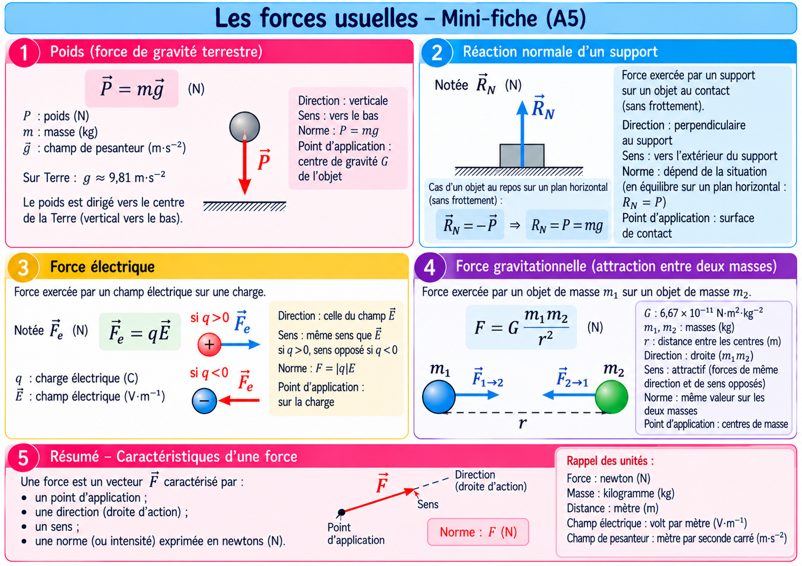
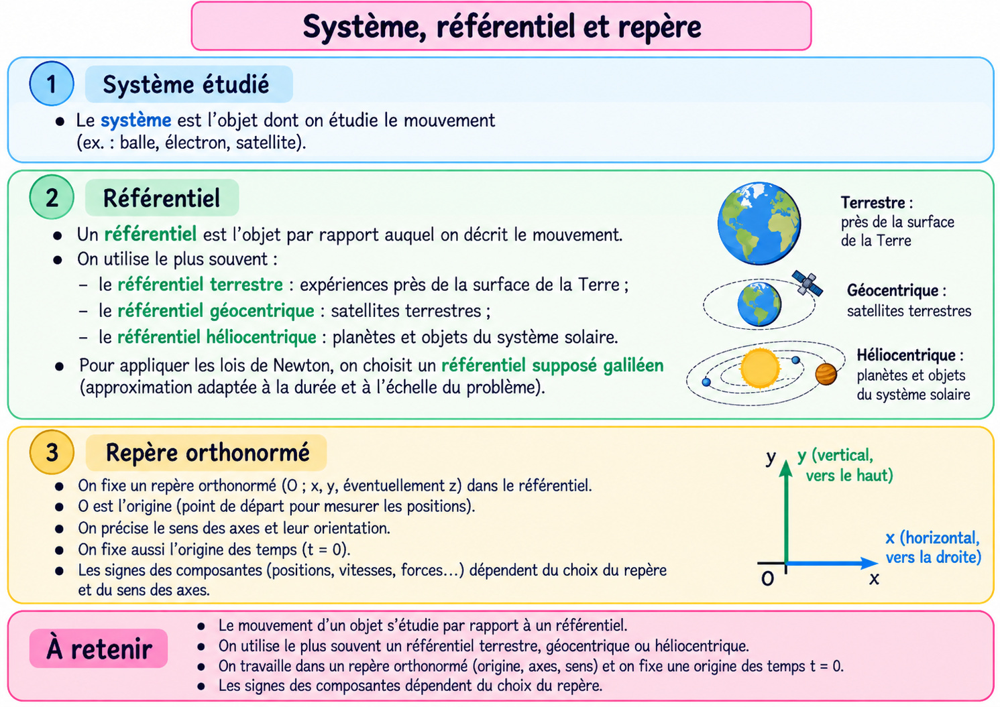
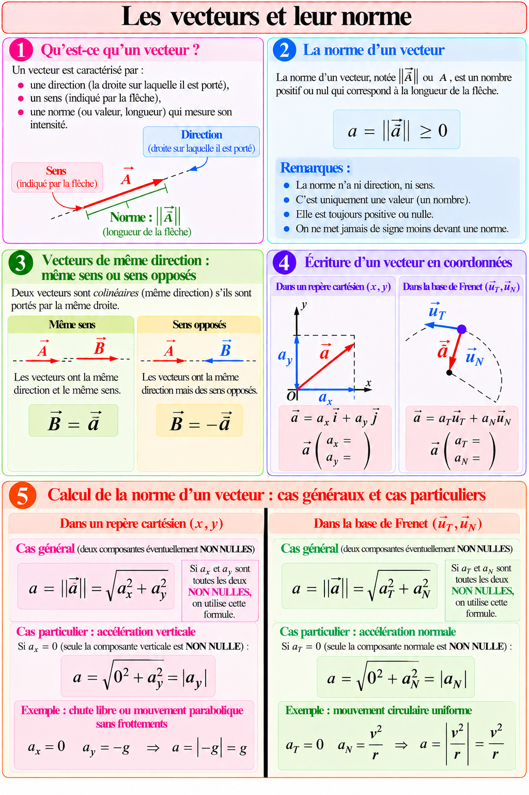

Fiches générales
10 fiches : forces, vecteurs, Newton, Kepler et repères

FORCESOuvrir la fiche en grand ↗
G et gOuvrir la fiche en grand ↗
LOIS DE KEPLER 2Ouvrir la fiche en grand ↗
LOIS DE KEPLEROuvrir la fiche en grand ↗
mini_fiche_lois_keplerOuvrir la fiche en grand ↗
mini_fiche_lois_newtonOuvrir la fiche en grand ↗
REPERE CARTESIEN VS BASE FRENETOuvrir la fiche en grand ↗
RESUME FORCEOuvrir la fiche en grand ↗
SYSTEME REFERENTIEL REPEREOuvrir la fiche en grand ↗
VECTEUROuvrir la fiche en grand ↗